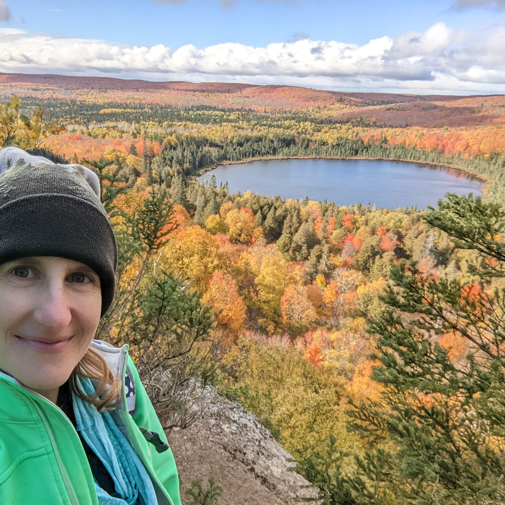

Rachael is dedicated to creating an environment where children thrive, develop independence, and grow through meaningful outdoor experiences. She earned a Bachelor of Science in Education from the University of Minnesota and an Early Childhood Montessori diploma through NAMC.
Rachael is a licensed teacher with over 15 years of diverse experience in childcare and education. Her career has spanned various settings including public and private schools, childcare centers, private homes, and organizations such as the Boys & Girls Club of America and the YMCA.
Rachael's passion for lifelong learning is intertwined with her love for nature. Founding this school is the culmination of these passions, providing children with organic opportunities to explore, problem-solve, and engage their senses in the natural world. Outside of work, Rachael enjoys hiking, biking, and immersing herself in the tranquility and adventures nature offers. Through Duluth Nature School, she aims to inspire a deep connection between children and nature, fostering both personal growth and love for the environment.
Our mission is to nurture and grow children's innate curiosity and sense of wonder through nature-based play and Montessori methods. With the outdoor environment as our primary learning space, we guide children to explore, learn from, and interact with the natural environment and their peers. Children's physical, cognitive, and social emotional development is supported as they gain a better understanding of nature and themselves, along with the skills for success in further education and life as independent citizens.
"In nature, children learn to take risks, overcome fears, make new friends, regulate emotions, and create imaginary worlds." — Angela J. Hanscom, Balanced and Barefoot: How Unrestricted Outdoor Play Makes for Strong, Confident, and Capable Children